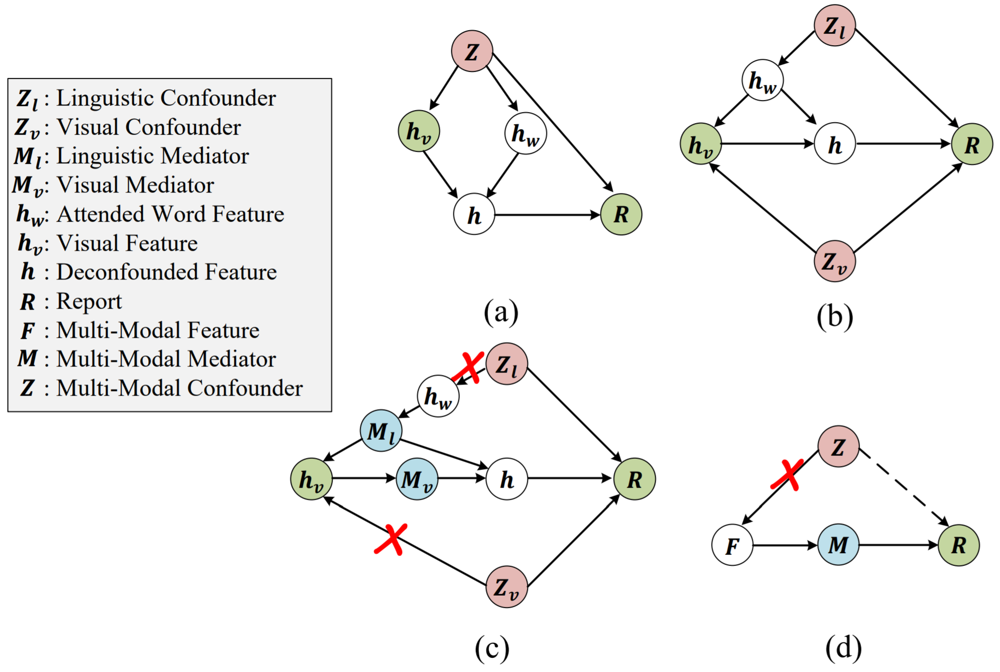

Yang Liu (刘阳)
Email: liuy856@mail.sysu.edu.cn
Office: School of Computer Science and Engineering, Sun Yat-sen University, Guangzhou, China
Curriculum Vitae
I am currently a research associate professor at HCP Lab, School of Computer Science and Engineering, Sun Yat-sen University, working with Prof. Liang Lin. From 2019-2021, I worked as a posdoctoral fellow at School of Computer Science and Engineering, Sun Yat-sen University. I obtained my Ph.D degree of Telecommunications and Information Systems in June 2019 at Phoenix-eye (XD145) Lab, School of Telecommunications Engineering, Xidian University, advised by Prof. Zhaoyang Lu and Prof. Jing Li. I received my B.S. degree in telecommunications engineering, School of Information Engineering, Chang’an University in 2014. I graduated from ZhiXin High School in 2010. I have authored and coauthored more than 10 papers in top-tier academic journals and conferences including IEEE T-IP, IEEE T-II, IEEE T-CSVT, IEEE SPL and CVPR. I serve as the reviewer of CVPR, ICCV, AAAI, ECCV, PRCV, IEEE T-IP, T-NNLS, IEEE T-CYB, IEEE T-MM, IEEE T-CSVT, IEEE T-HMS, IEEE SPL, PR, and NSFC, etc.
- Computer Vision: Video Understanding, Action Recognition, Multi-modal Reasoning
- Machine Learning: Causal Inference, Causal Discovery, Transfer Learning
- Urban Computing: Spatial-temporal Representation Learning, Traffic Flow Prediction, Traffic Signal Control
News
- 2022-11: I received the funding from Guangdong Basic and Applied Basic Research Foundation 2023.
- 2022-11: One review paper for causal reasoning is published online by Machine Intelligence Research.
- 2022-11: I am invited as the Program Committee (PC) Member for the Computational Visual Media Conference 2023.
- 2022-11: I am invited as the reviewer of IEEE/CVF Conference on Computer Vision and Pattern Recognition 2023.
- 2022-09: I become a member of IEEE Industrial Electronics Society.
- 2022-08: My TCGL paper published in IEEE T-IP is invited to be exhibited as the poster in Valse 2022.
- 2022-08: One review paper about causal reasoning is accepted by Machine Intelligence Research.
- 2022-08: I am invited as the Program Committee (PC) Member for the AAAI 2023.
- 2022-06: I become a member of CSIG.
- 2022-05: One paper is accepted by IEEE Transactions on Industrial Informatics.
- 2022-04: I received the funding from Science and Technology Projects in Guangzhou.
- 2022-03: One paper is accepted by CVPR 2022 as an oral presentation.
- 2022-01: One paper is accepted by IEEE Transactions on Image Processing. Code is available.
- 2022-01: One paper is accepted by ICASSP 2022.
- 2022-01: The code for TCGL is available.
- 2021-12: I am invited as the reviewer of Chinese Conference on Pattern Recognition and Computer Vision (PRCV) 2022.
- 2021-11: I am invited as the reviewer of IEEE/CVF Conference on Computer Vision and Pattern Recognition 2022.
- 2021-10: I start working as a research associate professor at Sun-Yat-Sen University.
- 2021-05: One paper is accepted by IEEE Transactions on Image Processing. Code is available.
- 2021-04: The code for SAKDN is available.
- 2021-02: I become a Member of the IEEE.
- 2020-12: I am invitied as the reviewing expert for NSFC.
- 2020-11: I received the funding from National Natural Science Foundation of Guangdong Province of China 2021.
- 2020-09: I received the funding from National Natural Science Foundation of China 2021.
- 2020-06: I received the funding from China Postdoctoral Science Foundation 2020.
- 2020-03: I received the funding from Fundamental Research of the Central Universities 2020.
- 2020-01: My Ph.D Thesis (psw：ithd) is available now.
- 2019-10: Codes and datasets for IEEE TIP is available.
- 2019-10: One paper is accepted by IEEE Transactions on Image Processing.
- 2019-08: I start working as a postdoctoral fellow at Sun-Yat-Sen University.
- 2019-06: I obtain my Ph.D degree from Xidian University.
Preprints



Preprint.
Research topic: Causal Reasoning, Video Question Answering
Preprint.
Research topic: Self-supervised Learning, Fine-grained Action Recognition
Preprint.
Research topic: Causal Reasoning, Medical Report Generation
Selected Publications (See Full List in Google Scholar)

IEEE Transactions on Pattern Analysis and Machine Intelligence (T-PAMI), Under Review.
|
[Paper] [Code & Dataset] [BibTex] |


Research topic: Causal Reasoning, Traffic Video Question Answering

IEEE Transactions on Neural Networks and Learning Systems (T-NNLS), Under Review.
Research topic: Traffic Signal Control

IEEE International Conference on Acoustics, Speech and Signal Processing (ICASSP), Under Review.
Research topic: Audio-Visual Self-supervised Learning

Information Sciences (INS), Major Revision.
Research topic: Traffic Flow Prediction

Machine Intelligence Research (MIR), 2022. (Review Paper for Causal Reasoning)
Research topic: Causal Reasoning, Spatial-temporal Representation Learning


IEEE/CVF Conference on Computer Vision and Pattern Recognition (CVPR), Oral, 2022. (CCF-A)


Research topic: Real-World Image Super-Resolution, Domain Adaptation

IEEE International Conference on Acoustics, Speech and Signal Processing (ICASSP), 2022. (CCF-B)
Research topic: Multi-modal Spatial-temporal Knowledge Transfer


IEEE Transactions on Circuits and Systems for Video Technology (T-CSVT), 2019. (JCR Rank 1, CCF-B)


Research topic: Multi-view Spatial-temporal Knowledge Transfer


Complexity, 2018. (JCR Rank 2)


Research topic: Heterogenous Spatial-temporal Knowledge Transfer

Journal of Xi'an Jiaotong University, 2018.
Research topic: Semantic Segmentation

Journal of Xi'an Jiaotong University, 2017.
Research topic: Semantic Segmentation

Chinese Conference on Biometric Recognition (CCBR), 2016. (EI Index, Chinese Important Conference)
Research topic: Heterogeneous Face Sketch Recognition
PhD Dissertation

PhD Dissertation, Xidian University, June 30, 2019. Yang Liu
Committee: Zhaoyang Lu, Jing Li, Quanxue Gao, Peiyi Shen, Guizhong Liu, Chun Qi.
Research Fundings
- Guangdong Basic and Applied Basic Research Foundation, ¥ 100K, 2023-2026, PI
- Science and Technology Projects in Guangzhou, ¥ 50K, 2022-2024, PI
- National Key Research and Development Program of China, ¥ 5,000K, 2021-2025, Key Participant
- National Natural Science Foundation of China, ¥ 240K, 2021-2024, PI
- Guangdong Basic and Applied Basic Research Foundation, ¥ 100K, 2021-2024, PI
- General Program of China Postdoctoral Science Foundation, ¥ 80K, 2020-2022, PI
- Fundamental Research Funds for the Central Universities, ¥ 120K, 2020-2022, PI
Academic services
-
Reviewer for Journals
- IEEE Transactions on Image Processing
- IEEE Transactions on Neural Networks and Learning Systems
- IEEE Transactions on Cybernetics
- IEEE Transactions on Multimedia
- IEEE Transactions on Circuits and Systems for Video Technology
- IEEE Transactions on Human-Machine Systems
- IEEE Signal Processing Letters
- IET Computer Vision
- Pattern Recognition
- Pattern Recognition Letters
- Machine Vision and Applications
- Journal of Visual Communication and Image Representation
- Visual Computer
- IEEE Access
-
PC/Reviewer for Conferences
- IEEE/CVF Conference on Computer Vision and Pattern Recognition (CVPR)
- IEEE/CVF International Conference on Computer Vision (ICCV)
- European Conference on Computer Vision (ECCV)
- AAAI Conference on Artificial Intelligence (AAAI)
- IEEE International Conference on Acoustics, Speech and Signal Processing (ICASSP)
- Computational Visual Media Conference (CVM)
- Chinese Conference on Pattern Recognition and Computer Vision (PRCV)
- ACM international joint conference on pervasive and ubiquitous computing (UbiComp)
- IEEE International Semantic Web Conference (ISWC)
- CCF BigData Conference (CCF BigData)
-
Reviewer for Fundings
- National Natural Science Foundation of China (NSFC)
Honors and Awards
- National Scholarship for PhD Students, Xidian University, 2018.
- Excellent PhD Students, Xidian University, 2018.
- First Class Scholarship for PhD Students, Xidian University, 2017.
- National English Competition, Third Prize, 2013.
- National Mathematical Modeling Competition, Second Prize, 2012.